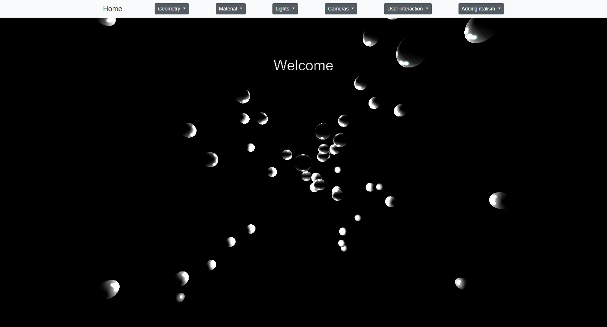
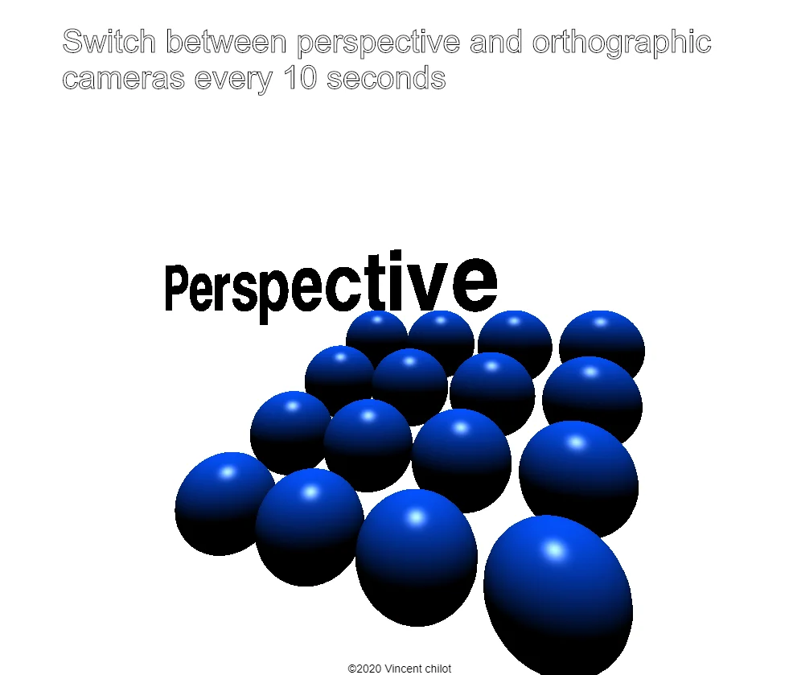
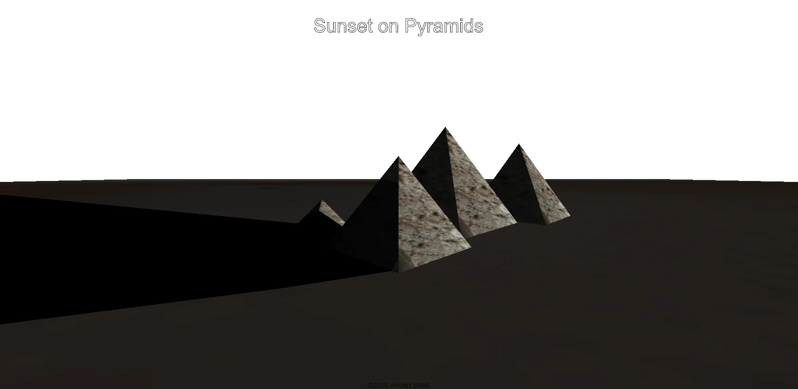

Three.js main concepts. Three.js is a cross-browser JavaScript library and application programming interface (API) used to create and display animated 3D computer graphics in a web browser. Three.js uses WebGL.
Github repository: three-js